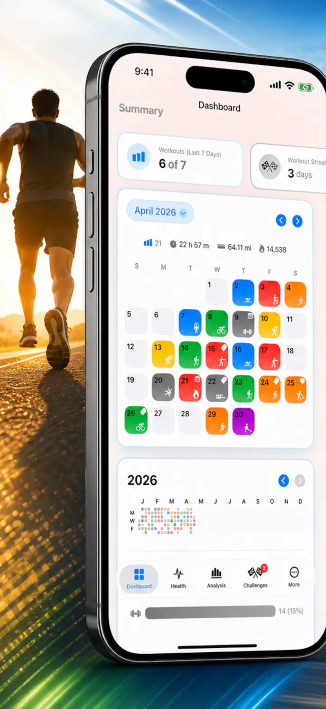
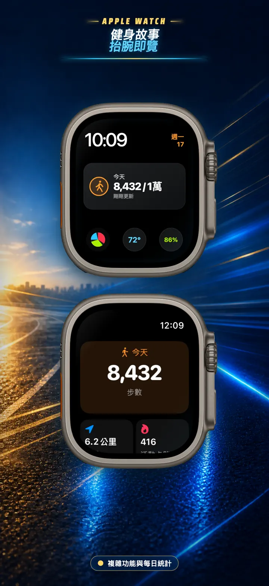
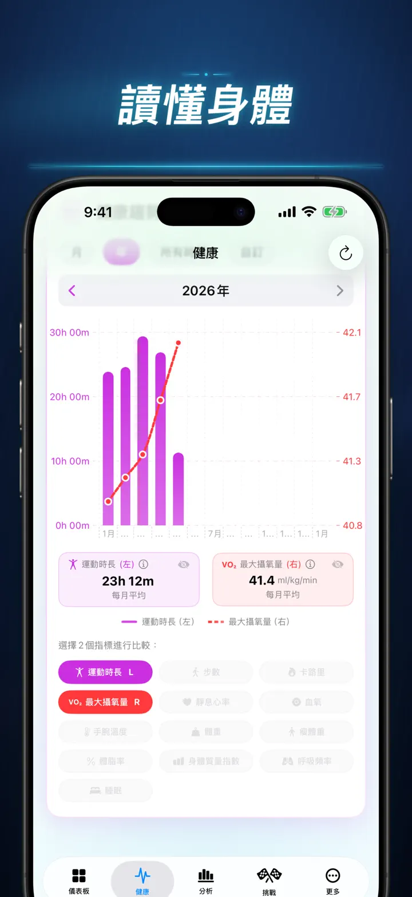
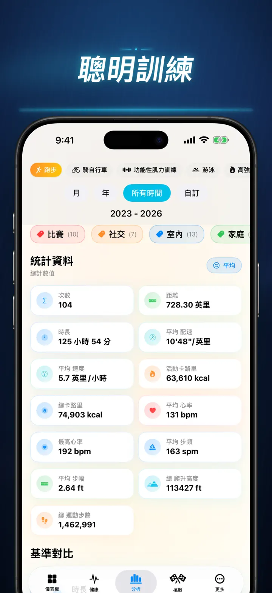
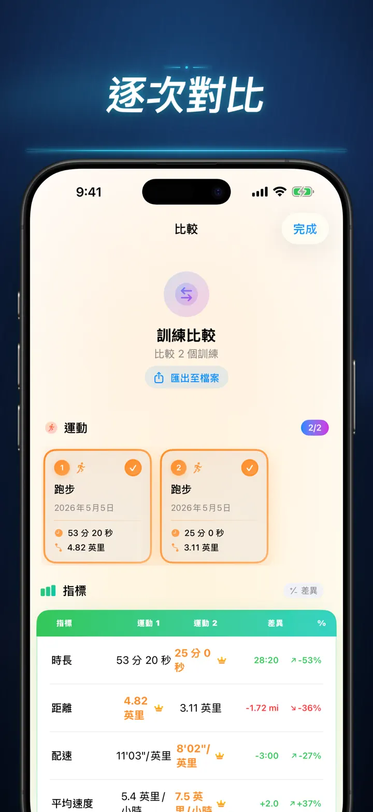
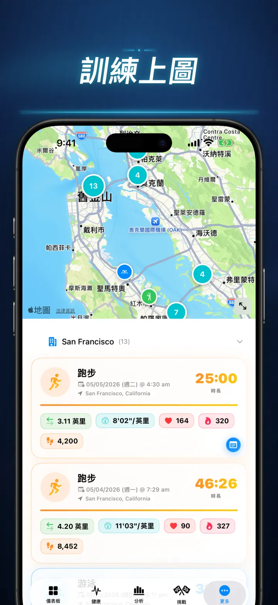
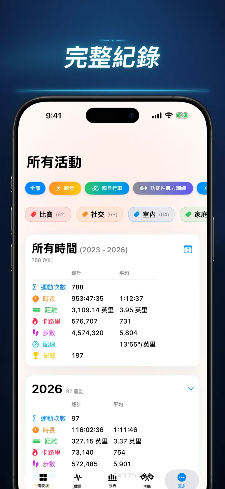

健身故事
解鎖你的運動洞察，自我挑戰，讓數據說話、視覺化！
現已登陸 Apple Watch：任一錶面都能看到今天的步數，「今天」頁面還有距離、卡路里與爬升樓層——資料直接讀自 Apple 健康。
從 App Store 下載
關於此 App
別再猜測，開始了解。健身故事將你的 Apple Health 資料轉化為 iOS 上最強大、最詳細的分析工具。無需帳號。沒有伺服器。只有你完整的健身歷程，視覺化呈現。
無論你想追蹤睡眠階段、分析跑步步頻，還是追求馬拉松個人最佳紀錄，這都是你辛勤努力應得的一體化儀表板。
支援任何會同步到 Apple Health 的裝置或 App——Apple Watch、Garmin、Polar、Suunto、Zwift 等。
專業級分析
- 趨勢與基準圖：使用箱形圖查看每種運動類型的中位數、四分位數和離群值。
- 精細分解：依時段、距離範圍、持續時間、配速、海拔增益、步頻和步幅長度篩選你的歷史紀錄。
- 一鍵排名：輕觸一下，即可將今日指標（距離、配速、心率等）與你的完整歷史比較。立刻知道自己是否達到了「前 15%」的表現！
- 貢獻圖：GitHub 風格的熱圖，完整呈現你的鍛鍊歷史。翻轉它可查看每日詳細統計。
重新構想的鍛鍊細節
- 智慧地圖：依速度、海拔或心率區間為你的戶外路線標色。（包含中國地圖校正）。
- 深度分段分析：查看每圈的公里或英里分段，包含配速、海拔、心率和步頻。
- 心率區間：依你的年齡與靜息心率，視覺化在自訂區間 1–5 的停留時間。
- 豐富紀錄：為每次鍛鍊加入照片、豐富文字備註、努力程度評分（1–10）和自訂標籤。
完整的健康指揮中心
- Apple Watch 測量的一切，都在同一處以每日、每週、每年的趨勢呈現：
- 心血管健康：靜息心率、VO2 Max（年齡校正）、血氧和呼吸頻率。
- 身體組成：體重、體脂率、瘦體重和 BMI，附帶趨勢指標。
- 活動與恢復：步數（含每小時分布）、主動與基礎代謝卡路里、腕溫偏差。
- 進階睡眠追蹤：深度、核心、REM 和清醒階段，逐夜視覺化。
- 關聯疊加：疊加多項健康指標，看看睡眠如何影響心率、體重如何影響 VO2 Max。
比較與競賽
- 鍛鍊比較：選擇最多 10 次鍛鍊並排比較。查看每項指標、每個分段的差異百分比（例如「+1.5% 更快」）！
- 比較匯出：想用其他工具分析？匯出你的鍛鍊比較！
- 個人紀錄：自動追蹤 1K、5K、10K、半馬、全馬和自訂距離。贏得金、銀、銅獎杯。
- 故事時間軸：一條按時間順序排列的動態，收錄你完成的每個里程碑、紀錄和鍛鍊。
你的資料，隨處可及
- 全球地圖：在互動式聚合世界地圖上，查看你曾鍛鍊過的每一個地方。
- 強大匯出：將完整歷史（或自訂範圍）匯出為 CSV 或 JSON，包含完整分段資料、身體指標和中繼資料。
- iCloud 同步：你的收藏、標籤、備註和評分即時同步至所有裝置。
- 隱私至上：沒有隱藏的伺服器。你的資料只存在於你的裝置和你的私人 iCloud 中。
- 你的汗水訴說著一個故事。是時候翻開它了。立即下載健身故事。
下載健身故事，解鎖你的運動洞察！
隱私權政策：https://masawata.net/privacy-policy.html 服務條款：https://www.apple.com/legal/internet-services/itunes/dev/stdeula/
螢幕快照






健身故事
現已登陸 Apple Watch：任一錶面都能看到今天的步數，「今天」頁面還有距離、卡路里與爬升樓層——資料直接讀自 Apple 健康。
從 App Store 下載